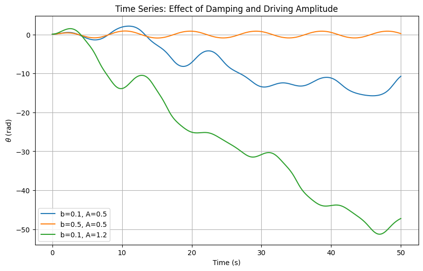
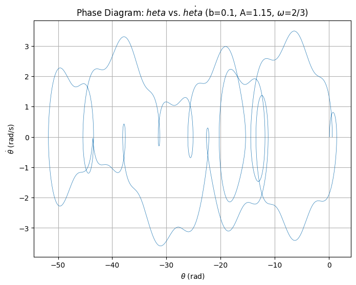
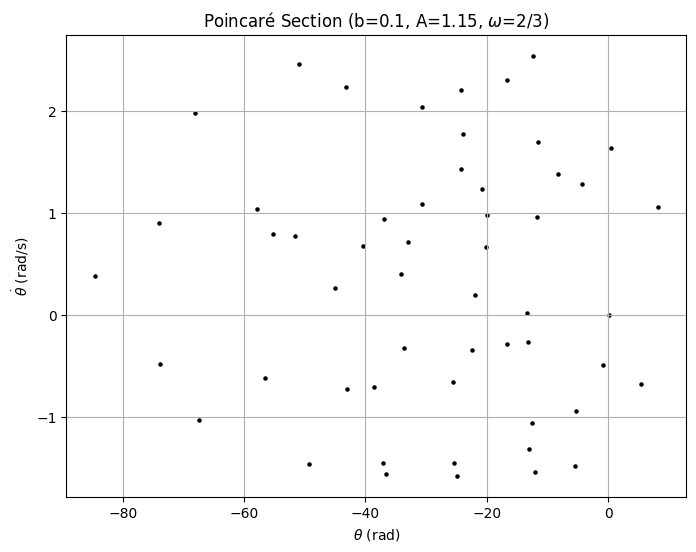

Problem 2: Forced Damped Pendulum
1. Theoretical Foundation
The forced damped pendulum is a nonlinear system governed by: $$ \frac{d^2\theta}{dt^2} + b \frac{d\theta}{dt} + \frac{g}{L} \sin\theta = A \cos(\omega t) $$ For small angles, \(\sin\theta \approx \theta\), yielding a linear equation: $$ \frac{d^2\theta}{dt^2} + b \frac{d\theta}{dt} + \omega_0^2 \theta = A \cos(\omega t) $$ where \(\omega_0 = \sqrt{g/L}\). Solutions include transient decay and a steady-state response: $$ \theta_p(t) = D \cos(\omega t - \phi), \quad D = \frac{A}{\sqrt{(\omega_0^2 - \omega^2)^2 + (b \omega)^2}} $$ Resonance occurs when \(\omega \approx \omega_0\), maximizing amplitude.
2. System Dynamics
- Damping \((b)\): Higher \(b\) reduces oscillation amplitude and shifts resonance.
- Driving Amplitude \((A)\): Larger \(A\) increases response, introducing nonlinear effects.
- Driving Frequency \((\omega)\): Controls synchronization and energy transfer.
- Chaos: Increasing \(A\) can induce period doubling and chaotic behavior.
3. Applications
- Energy Harvesting: Piezoelectric devices optimize energy capture by tuning \(\omega_0\).
- Bridges: Wind-induced oscillations (e.g., Tacoma Narrows) align with resonance behavior.
- Oscillating Circuits: Analogous to RLC circuits with \(\omega_0\) and damping.
4. Implementation of the Forced Damped Pendulum Simulation
This section outlines the computational framework to simulate the forced damped pendulum, governed by:
We develop a model using Python, incorporating parameters—damping coefficient \((b)\), driving amplitude \((A)\), driving frequency \((\omega)\), and initial conditions \((\theta_0, \dot{\theta}_0)\) to explore the system’s behavior. Separate visualizations highlight time evolution, phase portraits, and Poincaré sections, revealing periodic, quasiperiodic, and chaotic regimes.
4.1 Computational Model Setup
The nonlinear second-order ODE is converted to a system of first-order ODEs:
We use scipy.integrate.odeint for numerical integration, with \(g/L = 1\) (normalized natural frequency \(\omega_0 = 1\)) for simplicity.
4.2 Time Series: Effect of Damping and Driving Amplitude
This script simulates \(\theta(t)\) under varying \(b\) and \(A\), illustrating damping’s stabilizing effect and amplitude’s role in driving oscillations.
import numpy as np
import matplotlib.pyplot as plt
from scipy.integrate import odeint
# Define the system
def pendulum(state, t, b, A, omega):
theta, v = state
dtheta_dt = v
dv_dt = -b * v - np.sin(theta) + A * np.cos(omega * t)
return [dtheta_dt, dv_dt]
# Parameters
t = np.linspace(0, 50, 1000) # Time array
omega = 2/3 # Driving frequency
initial_conditions = [0.1, 0] # [theta0, v0]
# Cases to compare
params = [(0.1, 0.5, "b=0.1, A=0.5"), (0.5, 0.5, "b=0.5, A=0.5"), (0.1, 1.2, "b=0.1, A=1.2")]
# Simulate and plot
plt.figure(figsize=(10, 6))
for b, A, label in params:
sol = odeint(pendulum, initial_conditions, t, args=(b, A, omega))
theta = sol[:, 0]
plt.plot(t, theta, label=label)
plt.xlabel("Time (s)")
plt.ylabel(r"$\theta$ (rad)")
plt.title("Time Series: Effect of Damping and Driving Amplitude")
plt.legend()
plt.grid(True)
plt.show()
Output: A plot comparing \(\theta(t)\) for low damping/low amplitude (periodic), high damping (damped periodic), and low damping/high amplitude (approaching chaos).

4.3 Phase Diagram: \(\theta\) vs. \(\dot{\theta}\)
This script generates a phase portrait, showing the relationship between \(\theta\) and \(v = \dot{\theta}\), revealing attractors and dynamic regimes.
import numpy as np
import matplotlib.pyplot as plt
from scipy.integrate import odeint
# System definition (same as above)
def pendulum(state, t, b, A, omega):
theta, v = state
dtheta_dt = v
dv_dt = -b * v - np.sin(theta) + A * np.cos(omega * t)
return [dtheta_dt, dv_dt]
# Parameters
t = np.linspace(0, 100, 2000) # Longer time for steady state
b = 0.1 # Damping
A = 1.15 # Driving amplitude (near chaotic threshold)
omega = 2/3 # Driving frequency
initial_conditions = [0.1, 0]
# Solve
sol = odeint(pendulum, initial_conditions, t, args=(b, A, omega))
theta = sol[:, 0]
v = sol[:, 1]
# Plot phase diagram
plt.figure(figsize=(8, 6))
plt.plot(theta, v, lw=0.5)
plt.xlabel(r"$\theta$ (rad)")
plt.ylabel(r"$\dot{\theta}$ (rad/s)")
plt.title("Phase Diagram: $\theta$ vs. $\dot{\theta}$ (b=0.1, A=1.15, $\omega$=2/3)")
plt.grid(True)
plt.show()
Output: A phase portrait showing a complex trajectory, potentially a strange attractor, indicating chaotic behavior for \(A = 1.15\).

4.4 Poincaré Section: Transition to Chaos
This script constructs a Poincaré section by sampling \(\theta\) and \(\dot{\theta}\) at intervals of the driving period \((T = 2\pi/\omega)\), highlighting the transition from regular to chaotic motion.
import numpy as np
import matplotlib.pyplot as plt
from scipy.integrate import odeint
# System definition (same as above)
def pendulum(state, t, b, A, omega):
theta, v = state
dtheta_dt = v
dv_dt = -b * v - np.sin(theta) + A * np.cos(omega * t)
return [dtheta_dt, dv_dt]
# Parameters
omega = 2/3
T = 2 * np.pi / omega # Driving period
t = np.linspace(0, 500, 10000) # Long time for convergence
b = 0.1
A = 1.15 # Chaotic regime
initial_conditions = [0.1, 0]
# Solve
sol = odeint(pendulum, initial_conditions, t, args=(b, A, omega))
theta = sol[:, 0]
v = sol[:, 1]
# Poincaré section: sample at t = n * T
section_times = np.arange(0, 500, T)
section_indices = [np.argmin(np.abs(t - st)) for st in section_times]
theta_section = theta[section_indices]
v_section = v[section_indices]
# Plot
plt.figure(figsize=(8, 6))
plt.scatter(theta_section, v_section, s=5, c='black')
plt.xlabel(r"$\theta$ (rad)")
plt.ylabel(r"$\dot{\theta}$ (rad/s)")
plt.title("Poincaré Section (b=0.1, A=1.15, $\omega$=2/3)")
plt.grid(True)
plt.show()
Output: A scatter plot showing a fractal-like structure, characteristic of chaos, with points filling a region rather than forming a closed curve (periodic) or finite set (quasiperiodic).
